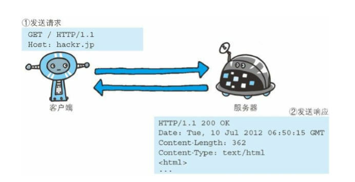
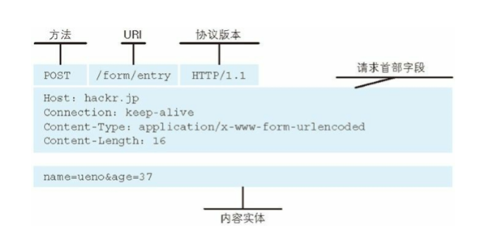
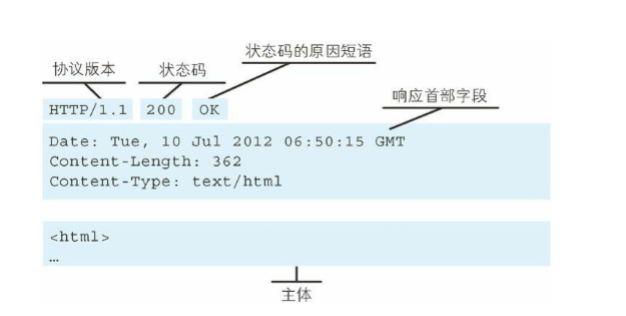
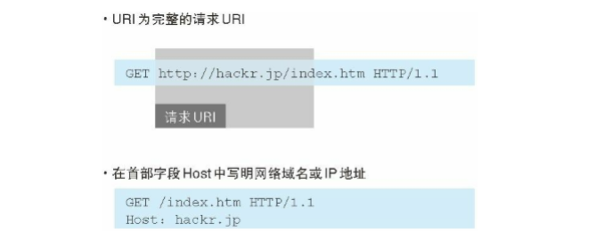
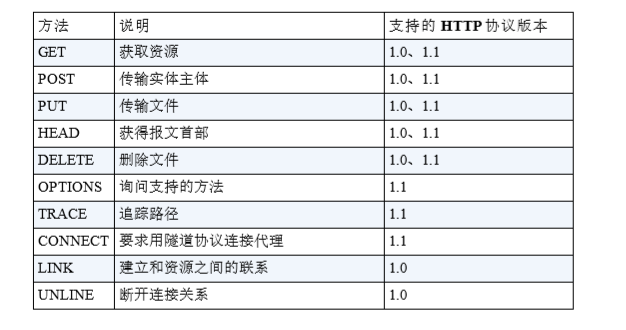
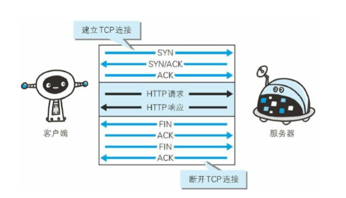
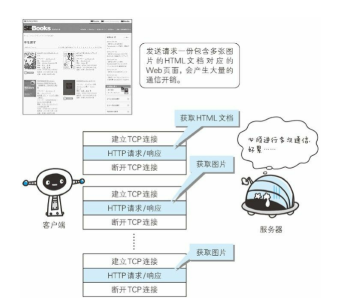
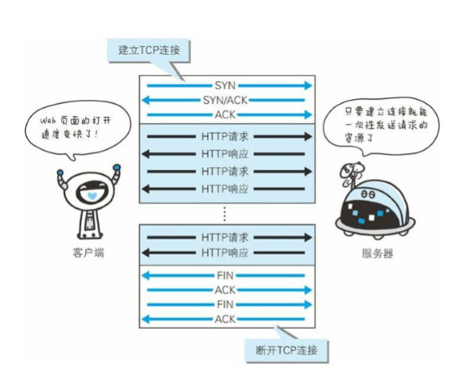
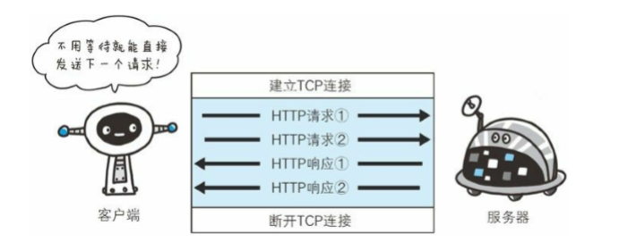
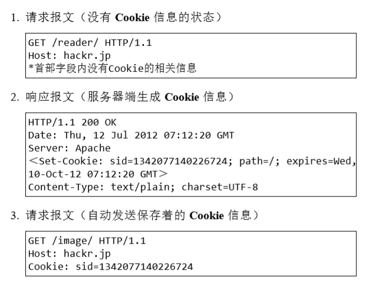

本章将针对 HTTP 协议结构进行讲解
HTTP 协议用于客户端和服务器端之间的通信
HTTP 协议和 TCP/IP 协议族内的其他众多的协议相同，用于客户端和服务器之间的通信。
请求访问文本或图像等资源的一端称为客户端，而提供资源响应的一端称为服务器端。
通过请求和响应的交换达成通信
HTTP 协议规定，请求从客户端发出，最后服务器端响应该请求并返回。换句话说，肯定是先从客户端开始建立通信的，服务器端在没有 接收到请求之前不会发送响应。
下面，我们来看一个具体的示例。


图：请求报文的构成

图：响应报文的构成
## HTTP 是不保存状态的协议
HTTP 是一种不保存状态，即无状态（stateless）协议。HTTP 协议自 身不对请求和响应之间的通信状态进行保存。也就是说在 HTTP 这个级别，协议对于发送过的请求或响应都不做持久化处理。
这是为了更快地处理大量事务，确保协议的可伸缩性，而特意把 HTTP 协议设 计成如此简单的。
HTTP/1.1 虽然是无状态协议，但为了实现期望的保持状态功能，于 是引入了 Cookie 技术。
## 请求 URI 定位资源
HTTP 协议使用 URI 定位互联网上的资源。
图：以 http://hackr.jp/index.htm 作为请求的例子
除此之外，如果不是访问特定资源而是对服务器本身发起请求，可以 用一个 * 来代替请求 URI。下面这个例子是查询 HTTP 服务器端支持 的 HTTP 方法种类。
OPTIONS * HTTP/1.1
告知服务器意图的 HTTP 方法
GET ：获取资源
GET 方法用来请求访问已被 URI 识别的资源。指定的资源经服务器 端解析后返回响应内容。POST：传输实体主体
虽然用 GET 方法也可以传输实体的主体，但一般不用 GET 方法进行 传输，而是用 POST 方法。虽说 POST 的功能与 GET 很相似，但 POST 的主要目的并不是获取响应的主体内容。PUT：传输文件
PUT 方法用来传输文件。就像 FTP 协议的文件上传一样，要求在请 求报文的主体中包含文件内容，然后保存到请求 URI 指定的位置。
鉴于 HTTP/1.1 的 PUT 方法自身不带验证机制，任何人都可以 上传文件 , 存在安全性问题，因此一般的 Web 网站不使用该方法。若 配合 Web 应用程序的验证机制，或架构设计采用 REST（REpresentational State Transfer，表征状态转移）标准的同类 Web 网站，就可能会开放使用 PUT 方法。HEAD：获得报文首部
HEAD 方法和 GET 方法一样，只是不返回报文主体部分。用于确认 URI 的有效性及资源更新的日期时间等。DELETE：删除文件
DELETE 方法用来删除文件，是与 PUT 相反的方法。DELETE 方法按 请求 URI 删除指定的资源。
HTTP/1.1 的 DELETE 方法本身和 PUT 方法一样不带验证机 制，所以一般的 Web 网站也不使用 DELETE 方法。当配合 Web 应用 程序的验证机制，或遵守 REST 标准时还是有可能会开放使用的OPTIONS：询问支持的方法
OPTIONS 方法用来查询针对请求 URI 指定的资源支持的方法TRACE：追踪路径
TRACE 方法是让 Web 服务器端将之前的请求通信环回给客户端的方 法。
客户端通过 TRACE 方法可以查询发送出去的请求是怎样被加工修改 / 篡改的。这是因为，请求想要连接到源目标服务器可能会通过代理 中转，TRACE 方法就是用来确认连接过程中发生的一系列操作。 但是，TRACE 方法本来就不怎么常用，再加上它容易引发 XST（Cross-Site Tracing，跨站追踪）攻击，通常就更不会用到了。CONNECT：要求用隧道协议连接代理
CONNECT 方法要求在与代理服务器通信时建立隧道，实现用隧道协议进行 TCP 通信。主要使用 SSL（Secure Sockets Layer，安全套接层）和 TLS（Transport Layer Security，传输层安全）协议把通信内容加密后经网络隧道传输。
HTTP/1.0 和 HTTP/1.1 支持的方法
持久连接节省通信量
HTTP 协议的初始版本中，每进行一次 HTTP 通信就要断开一次 TCP 连接。

使用浏览器浏览一个包含多张图片的 HTML 页面时，在发送请求访问 HTML 页面资源的同时，也会请求该 HTML 页面里包含的 其他资源。因此，每次的请求都会造成无谓的 TCP 连接建立和断开，增加通信量的开销。
持久连接
为解决上述 TCP 连接的问题，HTTP/1.1 和一部分的 HTTP/1.0 想出了持久连接（HTTP Persistent Connections，也称为 HTTP keep-alive 或 HTTP connection reuse）的方法。持久连接的特点是，只要任意一端 没有明确提出断开连接，则保持 TCP 连接状态。

图：持久连接旨在建立 1 次 TCP 连接后进行多次请求和响应的交互持久连接的好处在于减少了 TCP 连接的重复建立和断开所造成的额 外开销，减轻了服务器端的负载
在 HTTP/1.1 中，所有的连接默认都是持久连接管线化
持久连接使得多数请求以管线化（pipelining）方式发送成为可能
从前发送请求后需等待并收到响应，才能发送下一个请求。管线化技术出现后，不用等待响应亦可直接发送下一个请求。
图：不等待响应，直接发送下一个请求
使用 Cookie 的状态管理
保留无状态协议这个特征的同时又要解决类似的矛盾问题，于是引入了 Cookie 技术。Cookie 技术通过在请求和响应报文中写入 Cookie 信 息来控制客户端的状态。
Cookie 会根据从服务器端发送的响应报文内的一个叫做 Set-Cookie 的 首部字段信息，通知客户端保存 Cookie。当下次客户端再往该服务器 发送请求时，客户端会自动在请求报文中加入 Cookie 值后发送出去。
服务器端发现客户端发送过来的 Cookie 后，会去检查究竟是从哪一个客户端发来的连接请求，然后对比服务器上的记录，最后得到之前的状态信息。
